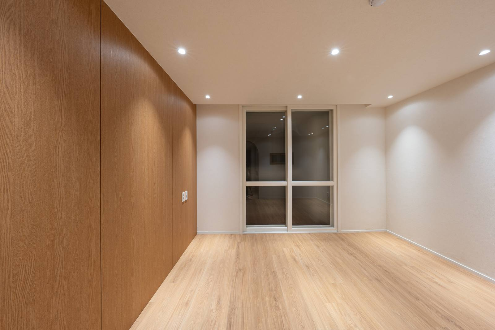
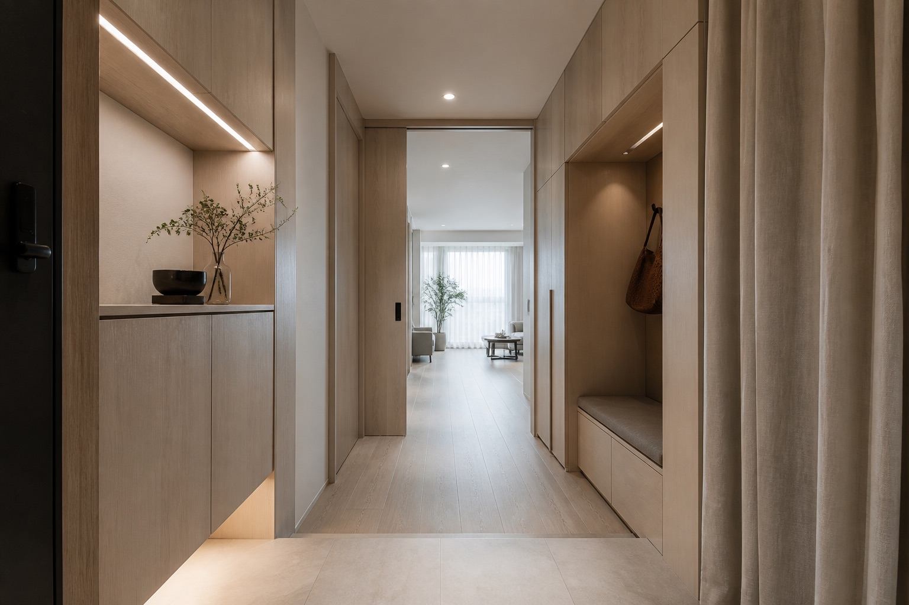

RESIDENTIAL · 21PY21평 아파트
생활 동선과 수납을 중심으로 정리한 공간 리디자인 프로젝트
HOUSE · APARTMENT · PLANNING
생활 동선과 수납, 집의 상태를 함께 봅니다. 단독주택부터 아파트까지 전체 공사와 부분 리모델링 중 필요한 범위를 정리하고, 예산과 입주 일정에 맞춰 공간을 계획합니다.
집의 종류와 필요한 공사에 따라 확인할 내용이 다릅니다.

RESIDENTIAL · 21PY생활 동선과 수납을 중심으로 정리한 공간 리디자인 프로젝트

RESIDENTIAL · 30PY현관과 수납 동선을 중심으로 계획한 주거 공간 디자인 프로젝트
창호·설비를 유지할지, 주방·욕실을 얼마나 바꿀지부터 구분합니다. 기획·디자인과 시공의 담당 범위는 현장 조건 확인 후 별도로 협의합니다.
주택·아파트 인테리어 상담하기 →구미·포항·울산·경주·경산의 아파트 인테리어도 지역, 평형, 입주 예정일과 현재 상태를 알려주시면 상담 가능 범위와 방문 일정을 확인합니다. 각 지역에 지점이나 상주 시공팀이 있다는 뜻은 아니며, 현장별 일정과 공사 담당은 별도 협의합니다.
단지별 공사 시간·승강기 사용·보양·자재 반입 조건은 관리사무소에 확인하고, 주택은 외부 보수와 실내 작업 범위를 나눠 준비하세요. 단지명만으로 견적이나 공사 가능 여부를 확정하지 않습니다.